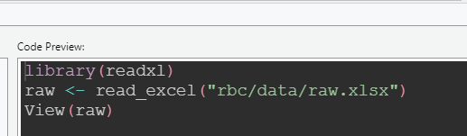

# standard toolkit
library(dplyr)
library(tools)
# tidying data
library(tidyr)
library(readr)
library(lubridate)
library(janitor)
library(skimr)
# Excel reading and writing
library(readxl)
library(writexl)R beginner’s club 2025-01-09
What’s this session about
This session is about some top tips for working between Excel and R, mainly concentrating on using R for tidying up messy Excel data. We’ll start with a lot of package loading:
Reading Excel files
R is exceptionally useful as a way of automating tricky Excel tasks. Let’s say we have some slightly broken Excel data. We can read that into R in a couple of different ways. If you’re using Rstudio, the path of least resistance is to find your data in the Files pane, and click on it:
That brings up an interactive data import tool which, joy of joys, writes the import code for you:

You can then copy that code into your script so that your data loading is repeatable - and you can tweak it to suit:
raw <- read_xlsx(here::here("rbc/data/raw.xlsx")) # little bit of here to make the paths behave
head(raw)# A tibble: 6 × 15
PracticeCode GPPracticeName PracticeListSize AddressLine1 AddressLine2
<dbl> <chr> <chr> <chr> <chr>
1 55003 Thurso & Halkirk Medi… 6143 Thurso & Ha… 69 Princes …
2 55041 Nairn Healthcare Group 15756 Nairn Healt… Nairn Town …
3 55075 Dunbeath Surgery 685 Dunbeath Su… Achorn Road
4 55080 Canisbay & Castletown… 2750 Canisbay & … Murrayfield
5 55145 The Pearson Practice 2647 The Pearson… Wick Medica…
6 55183 Armadale Medical Prac… 925 Armadale Me… Armadale
# ℹ 10 more variables: AddressLine3 <chr>, AddressLine4 <chr>, Postcode <chr>,
# TelephoneNumber <chr>, PracticeType <chr>, `date collected` <chr>,
# HB <chr>, HSCP <chr>, DataZone <chr>, GPCluster <chr>(this is a subset of Public Health Scotland’s open data on GP practices. I should emphasise that all the data problems in this sample have been deliberately introduced by me demonstration purposes - the original dataset is lovely and clean)
It’s also worth saying that Excel files are incredibly complicated. In this session, we’ll keep things simple, but there are lots of powerful R tools out there if you need more control (especially the openxlsx2 package).
Initial exploration: some tools for understanding what you’ve loaded
The base-R way, beyond eyeballing the data with View(), is to use summary or str:
raw |>
summary() PracticeCode GPPracticeName PracticeListSize AddressLine1
Min. :55003 Length:64 Length:64 Length:64
1st Qu.:55341 Class :character Class :character Class :character
Median :55589 Mode :character Mode :character Mode :character
Mean :55606
3rd Qu.:55846
Max. :56576
AddressLine2 AddressLine3 AddressLine4 Postcode
Length:64 Length:64 Length:64 Length:64
Class :character Class :character Class :character Class :character
Mode :character Mode :character Mode :character Mode :character
TelephoneNumber PracticeType date collected HB
Length:64 Length:64 Length:64 Length:64
Class :character Class :character Class :character Class :character
Mode :character Mode :character Mode :character Mode :character
HSCP DataZone GPCluster
Length:64 Length:64 Length:64
Class :character Class :character Class :character
Mode :character Mode :character Mode :character
raw |>
str()tibble [64 × 15] (S3: tbl_df/tbl/data.frame)
$ PracticeCode : num [1:64] 55003 55041 55075 55080 55145 ...
$ GPPracticeName : chr [1:64] "Thurso & Halkirk Medical Practice" "Nairn Healthcare Group" "Dunbeath Surgery" "Canisbay & Castletown Joint Medical Practice" ...
$ PracticeListSize: chr [1:64] "6143" "15756" "685" "2750" ...
$ AddressLine1 : chr [1:64] "Thurso & Halkirk Medical Practice" "Nairn Healthcare Group" "Dunbeath Surgery" "Canisbay & Castletown Joint Medical Practice" ...
$ AddressLine2 : chr [1:64] "69 Princes Street" "Nairn Town and County Hospital" "Achorn Road" "Murrayfield" ...
$ AddressLine3 : chr [1:64] "Thurso" "Cawdor Road" "Dunbeath" "Castletown" ...
$ AddressLine4 : chr [1:64] "Caithness" "Nairn" "Caithness" NA ...
$ Postcode : chr [1:64] "KW14 7DH" "IV12 5EE" "KW6 6EZ" "KW14 8TY" ...
$ TelephoneNumber : chr [1:64] "01847 895 986" "01667 452 096" "01593 731 205" "01847 821 205" ...
$ PracticeType : chr [1:64] "17J" "17J" "17J" "17J" ...
$ date collected : chr [1:64] "45654" "45659" "45646" "45655" ...
$ HB : chr [1:64] "S08000022" "S08000022" "S08000022" "S08000022" ...
$ HSCP : chr [1:64] "S37000016" "S37000016" "S37000016" "S37000016" ...
$ DataZone : chr [1:64] "S01010805" "S01010556" "S01010772" NA ...
$ GPCluster : chr [1:64] "NHSH (North) Caithness" "NHSH (North) Badenoch & Nairn" "NHSH (North) West Sutherland" "NHSH (North) Caithness" ...Personally, I find summary() actively unhelpful, but str() does have it’s place, especially as a quick check of the data types you have in each column. You might also like to try dplyr::glimpse() for a tweaked version of str() that you can use in piped code to understand what’s going on:
raw |>
glimpse() |>
count(GPCluster) |>
glimpse()Rows: 64
Columns: 15
$ PracticeCode <dbl> 55003, 55041, 55075, 55080, 55145, 55183, 55201, 5522…
$ GPPracticeName <chr> "Thurso & Halkirk Medical Practice", "Nairn Healthcar…
$ PracticeListSize <chr> "6143", "15756", "685", "2750", "2647", "925", "2858"…
$ AddressLine1 <chr> "Thurso & Halkirk Medical Practice", "Nairn Healthcar…
$ AddressLine2 <chr> "69 Princes Street", "Nairn Town and County Hospital"…
$ AddressLine3 <chr> "Thurso", "Cawdor Road", "Dunbeath", "Castletown", "M…
$ AddressLine4 <chr> "Caithness", "Nairn", "Caithness", NA, "Wick", "Caith…
$ Postcode <chr> "KW14 7DH", "IV12 5EE", "KW6 6EZ", "KW14 8TY", "KW1 5…
$ TelephoneNumber <chr> "01847 895 986", "01667 452 096", "01593 73…
$ PracticeType <chr> "17J", "17J", "17J", "17J", "17J", "2C", "17J", "17J"…
$ `date collected` <chr> "45654", "45659", "45646", "45655", "45664", "45661",…
$ HB <chr> "S08000022", "S08000022", "S08000022", "S08000022", "…
$ HSCP <chr> "S37000016", "S37000016", "S37000016", "S37000016", "…
$ DataZone <chr> "S01010805", "S01010556", "S01010772", NA, "S01010781…
$ GPCluster <chr> "NHSH (North) Caithness", "NHSH (North) Badenoch & Na…
Rows: 16
Columns: 2
$ GPCluster <chr> "NHS highland(North) West Sutherland", "NHSH (Norf) Skye & L…
$ n <int> 1, 1, 6, 8, 3, 4, 5, 3, 4, 8, 4, 6, 4, 5, 1, 1A much more capable alternative for inspecting your data is the skimr package:
raw |>
skimr::skim()| Name | raw |
| Number of rows | 64 |
| Number of columns | 15 |
| _______________________ | |
| Column type frequency: | |
| character | 14 |
| numeric | 1 |
| ________________________ | |
| Group variables | None |
Variable type: character
| skim_variable | n_missing | complete_rate | min | max | empty | n_unique | whitespace |
|---|---|---|---|---|---|---|---|
| GPPracticeName | 0 | 1.00 | 14 | 51 | 0 | 62 | 0 |
| PracticeListSize | 1 | 0.98 | 3 | 5 | 0 | 61 | 0 |
| AddressLine1 | 0 | 1.00 | 14 | 51 | 0 | 62 | 0 |
| AddressLine2 | 1 | 0.98 | 6 | 40 | 0 | 56 | 0 |
| AddressLine3 | 2 | 0.97 | 5 | 26 | 0 | 47 | 0 |
| AddressLine4 | 21 | 0.67 | 4 | 17 | 0 | 31 | 0 |
| Postcode | 0 | 1.00 | 6 | 11 | 0 | 58 | 0 |
| TelephoneNumber | 1 | 0.98 | 17 | 18 | 0 | 61 | 0 |
| PracticeType | 0 | 1.00 | 2 | 3 | 0 | 3 | 0 |
| date collected | 0 | 1.00 | 5 | 13 | 0 | 22 | 0 |
| HB | 2 | 0.97 | 9 | 9 | 0 | 1 | 0 |
| HSCP | 2 | 0.97 | 9 | 9 | 0 | 1 | 0 |
| DataZone | 2 | 0.97 | 9 | 9 | 0 | 51 | 0 |
| GPCluster | 1 | 0.98 | 17 | 35 | 0 | 15 | 0 |
Variable type: numeric
| skim_variable | n_missing | complete_rate | mean | sd | p0 | p25 | p50 | p75 | p100 | hist |
|---|---|---|---|---|---|---|---|---|---|---|
| PracticeCode | 0 | 1 | 55606.09 | 348.92 | 55003 | 55341 | 55589 | 55845.75 | 56576 | ▅▇▇▂▁ |
That treats different data types differently, so if we coerce one of our columns to numeric, and skim again, we’ll get different output:
raw |>
mutate(PracticeListSize = as.numeric(PracticeListSize)) |>
skimr::skim()| Name | mutate(raw, PracticeListS… |
| Number of rows | 64 |
| Number of columns | 15 |
| _______________________ | |
| Column type frequency: | |
| character | 13 |
| numeric | 2 |
| ________________________ | |
| Group variables | None |
Variable type: character
| skim_variable | n_missing | complete_rate | min | max | empty | n_unique | whitespace |
|---|---|---|---|---|---|---|---|
| GPPracticeName | 0 | 1.00 | 14 | 51 | 0 | 62 | 0 |
| AddressLine1 | 0 | 1.00 | 14 | 51 | 0 | 62 | 0 |
| AddressLine2 | 1 | 0.98 | 6 | 40 | 0 | 56 | 0 |
| AddressLine3 | 2 | 0.97 | 5 | 26 | 0 | 47 | 0 |
| AddressLine4 | 21 | 0.67 | 4 | 17 | 0 | 31 | 0 |
| Postcode | 0 | 1.00 | 6 | 11 | 0 | 58 | 0 |
| TelephoneNumber | 1 | 0.98 | 17 | 18 | 0 | 61 | 0 |
| PracticeType | 0 | 1.00 | 2 | 3 | 0 | 3 | 0 |
| date collected | 0 | 1.00 | 5 | 13 | 0 | 22 | 0 |
| HB | 2 | 0.97 | 9 | 9 | 0 | 1 | 0 |
| HSCP | 2 | 0.97 | 9 | 9 | 0 | 1 | 0 |
| DataZone | 2 | 0.97 | 9 | 9 | 0 | 51 | 0 |
| GPCluster | 1 | 0.98 | 17 | 35 | 0 | 15 | 0 |
Variable type: numeric
| skim_variable | n_missing | complete_rate | mean | sd | p0 | p25 | p50 | p75 | p100 | hist |
|---|---|---|---|---|---|---|---|---|---|---|
| PracticeCode | 0 | 1.00 | 55606.09 | 348.92 | 55003 | 55341 | 55589 | 55845.75 | 56576 | ▅▇▇▂▁ |
| PracticeListSize | 4 | 0.94 | 4016.20 | 3516.20 | 244 | 1486 | 2806 | 5704.75 | 15756 | ▇▃▁▁▁ |
And you can wrangle the output of skim in a few different ways:
raw |>
skimr::skim() |>
select(n_missing) # just look at one metric# A tibble: 15 × 1
n_missing
<int>
1 0
2 1
3 0
4 1
5 2
6 21
7 0
8 1
9 0
10 0
11 2
12 2
13 2
14 1
15 0raw |>
skimr::skim() |>
yank("numeric") # an alternative way of looking at one metricVariable type: numeric
| skim_variable | n_missing | complete_rate | mean | sd | p0 | p25 | p50 | p75 | p100 | hist |
|---|---|---|---|---|---|---|---|---|---|---|
| PracticeCode | 0 | 1 | 55606.09 | 348.92 | 55003 | 55341 | 55589 | 55845.75 | 56576 | ▅▇▇▂▁ |
raw |>
mutate(PracticeListSize = as.numeric(PracticeListSize),
PracticeCode = as.character(PracticeCode)) |>
group_by(PracticeType) |>
skim() # look at groups and columns together| Name | group_by(…) |
| Number of rows | 64 |
| Number of columns | 15 |
| _______________________ | |
| Column type frequency: | |
| character | 13 |
| numeric | 1 |
| ________________________ | |
| Group variables | PracticeType |
Variable type: character
| skim_variable | PracticeType | n_missing | complete_rate | min | max | empty | n_unique | whitespace |
|---|---|---|---|---|---|---|---|---|
| PracticeCode | 17C | 0 | 1.00 | 5 | 5 | 0 | 1 | 0 |
| PracticeCode | 17J | 0 | 1.00 | 5 | 5 | 0 | 46 | 0 |
| PracticeCode | 2C | 0 | 1.00 | 5 | 5 | 0 | 15 | 0 |
| GPPracticeName | 17C | 0 | 1.00 | 29 | 29 | 0 | 1 | 0 |
| GPPracticeName | 17J | 0 | 1.00 | 14 | 44 | 0 | 46 | 0 |
| GPPracticeName | 2C | 0 | 1.00 | 18 | 51 | 0 | 15 | 0 |
| AddressLine1 | 17C | 0 | 1.00 | 29 | 29 | 0 | 1 | 0 |
| AddressLine1 | 17J | 0 | 1.00 | 14 | 44 | 0 | 46 | 0 |
| AddressLine1 | 2C | 0 | 1.00 | 18 | 51 | 0 | 15 | 0 |
| AddressLine2 | 17C | 0 | 1.00 | 11 | 11 | 0 | 1 | 0 |
| AddressLine2 | 17J | 1 | 0.98 | 6 | 40 | 0 | 41 | 0 |
| AddressLine2 | 2C | 0 | 1.00 | 7 | 23 | 0 | 15 | 0 |
| AddressLine3 | 17C | 0 | 1.00 | 12 | 12 | 0 | 1 | 0 |
| AddressLine3 | 17J | 1 | 0.98 | 5 | 26 | 0 | 34 | 0 |
| AddressLine3 | 2C | 1 | 0.93 | 6 | 20 | 0 | 13 | 0 |
| AddressLine4 | 17C | 1 | 0.00 | NA | NA | 0 | 0 | 0 |
| AddressLine4 | 17J | 18 | 0.62 | 4 | 16 | 0 | 22 | 0 |
| AddressLine4 | 2C | 2 | 0.87 | 6 | 17 | 0 | 12 | 0 |
| Postcode | 17C | 0 | 1.00 | 8 | 8 | 0 | 1 | 0 |
| Postcode | 17J | 0 | 1.00 | 6 | 11 | 0 | 42 | 0 |
| Postcode | 2C | 0 | 1.00 | 7 | 9 | 0 | 15 | 0 |
| TelephoneNumber | 17C | 0 | 1.00 | 17 | 17 | 0 | 1 | 0 |
| TelephoneNumber | 17J | 1 | 0.98 | 17 | 18 | 0 | 45 | 0 |
| TelephoneNumber | 2C | 0 | 1.00 | 17 | 17 | 0 | 15 | 0 |
| date collected | 17C | 0 | 1.00 | 5 | 5 | 0 | 1 | 0 |
| date collected | 17J | 0 | 1.00 | 5 | 13 | 0 | 19 | 0 |
| date collected | 2C | 0 | 1.00 | 5 | 10 | 0 | 13 | 0 |
| HB | 17C | 0 | 1.00 | 9 | 9 | 0 | 1 | 0 |
| HB | 17J | 2 | 0.96 | 9 | 9 | 0 | 1 | 0 |
| HB | 2C | 0 | 1.00 | 9 | 9 | 0 | 1 | 0 |
| HSCP | 17C | 0 | 1.00 | 9 | 9 | 0 | 1 | 0 |
| HSCP | 17J | 2 | 0.96 | 9 | 9 | 0 | 1 | 0 |
| HSCP | 2C | 0 | 1.00 | 9 | 9 | 0 | 1 | 0 |
| DataZone | 17C | 0 | 1.00 | 9 | 9 | 0 | 1 | 0 |
| DataZone | 17J | 1 | 0.98 | 9 | 9 | 0 | 38 | 0 |
| DataZone | 2C | 1 | 0.93 | 9 | 9 | 0 | 12 | 0 |
| GPCluster | 17C | 0 | 1.00 | 21 | 21 | 0 | 1 | 0 |
| GPCluster | 17J | 0 | 1.00 | 17 | 32 | 0 | 13 | 0 |
| GPCluster | 2C | 1 | 0.93 | 17 | 35 | 0 | 9 | 0 |
Variable type: numeric
| skim_variable | PracticeType | n_missing | complete_rate | mean | sd | p0 | p25 | p50 | p75 | p100 | hist |
|---|---|---|---|---|---|---|---|---|---|---|---|
| PracticeListSize | 17C | 0 | 1.00 | 928.00 | NA | 928 | 928.0 | 928.0 | 928.0 | 928 | ▁▁▇▁▁ |
| PracticeListSize | 17J | 3 | 0.94 | 4419.67 | 3153.60 | 475 | 2316.0 | 3458.0 | 6131.0 | 15756 | ▇▅▁▁▁ |
| PracticeListSize | 2C | 1 | 0.93 | 2939.93 | 4461.68 | 244 | 551.5 | 1249.5 | 2364.5 | 13568 | ▇▁▁▁▁ |
raw |>
skimr::skim_tee() # like glimpse, produce skim output but return the original data to allow use inside with piped code ── Data Summary ────────────────────────
Values
Name data
Number of rows 64
Number of columns 15
_______________________
Column type frequency:
character 14
numeric 1
________________________
Group variables None
── Variable type: character ────────────────────────────────────────────────────
skim_variable n_missing complete_rate min max empty n_unique whitespace
1 GPPracticeName 0 1 14 51 0 62 0
2 PracticeListSize 1 0.984 3 5 0 61 0
3 AddressLine1 0 1 14 51 0 62 0
4 AddressLine2 1 0.984 6 40 0 56 0
5 AddressLine3 2 0.969 5 26 0 47 0
6 AddressLine4 21 0.672 4 17 0 31 0
7 Postcode 0 1 6 11 0 58 0
8 TelephoneNumber 1 0.984 17 18 0 61 0
9 PracticeType 0 1 2 3 0 3 0
10 date collected 0 1 5 13 0 22 0
11 HB 2 0.969 9 9 0 1 0
12 HSCP 2 0.969 9 9 0 1 0
13 DataZone 2 0.969 9 9 0 51 0
14 GPCluster 1 0.984 17 35 0 15 0
── Variable type: numeric ──────────────────────────────────────────────────────
skim_variable n_missing complete_rate mean sd p0 p25 p50 p75
1 PracticeCode 0 1 55606. 349. 55003 55341 55589 55846.
p100 hist
1 56576 ▅▇▇▂▁raw |>
skimr::skim() |>
partition() # split different data types into separate list itemsVariable type: character
| skim_variable | n_missing | complete_rate | min | max | empty | n_unique | whitespace |
|---|---|---|---|---|---|---|---|
| GPPracticeName | 0 | 1.00 | 14 | 51 | 0 | 62 | 0 |
| PracticeListSize | 1 | 0.98 | 3 | 5 | 0 | 61 | 0 |
| AddressLine1 | 0 | 1.00 | 14 | 51 | 0 | 62 | 0 |
| AddressLine2 | 1 | 0.98 | 6 | 40 | 0 | 56 | 0 |
| AddressLine3 | 2 | 0.97 | 5 | 26 | 0 | 47 | 0 |
| AddressLine4 | 21 | 0.67 | 4 | 17 | 0 | 31 | 0 |
| Postcode | 0 | 1.00 | 6 | 11 | 0 | 58 | 0 |
| TelephoneNumber | 1 | 0.98 | 17 | 18 | 0 | 61 | 0 |
| PracticeType | 0 | 1.00 | 2 | 3 | 0 | 3 | 0 |
| date collected | 0 | 1.00 | 5 | 13 | 0 | 22 | 0 |
| HB | 2 | 0.97 | 9 | 9 | 0 | 1 | 0 |
| HSCP | 2 | 0.97 | 9 | 9 | 0 | 1 | 0 |
| DataZone | 2 | 0.97 | 9 | 9 | 0 | 51 | 0 |
| GPCluster | 1 | 0.98 | 17 | 35 | 0 | 15 | 0 |
Variable type: numeric
| skim_variable | n_missing | complete_rate | mean | sd | p0 | p25 | p50 | p75 | p100 | hist |
|---|---|---|---|---|---|---|---|---|---|---|
| PracticeCode | 0 | 1 | 55606.09 | 348.92 | 55003 | 55341 | 55589 | 55845.75 | 56576 | ▅▇▇▂▁ |
Fixing data types
Our dataset initially doesn’t look too horrible. But we can generate some very confusing results from it:
min(raw$PracticeListSize, na.rm = T)[1] "10000"max(raw$PracticeListSize, na.rm = T) # what![1] "990"What’s happening here is that R is putting our results into alphabetical order, rather than numerical. That’s because these numbers are stored as if they were text owing to a couple of anomalous data points:
raw$PracticeListSize[grep("[^0-9]", raw$PracticeListSize)][1] "187*" "9738a" "5595c"We could use as.numeric to remove everything other than proper numbers:
raw |>
mutate(PracticeListSize = as.numeric(PracticeListSize))# A tibble: 64 × 15
PracticeCode GPPracticeName PracticeListSize AddressLine1 AddressLine2
<dbl> <chr> <dbl> <chr> <chr>
1 55003 Thurso & Halkirk Med… 6143 Thurso & Ha… 69 Princes …
2 55041 Nairn Healthcare Gro… 15756 Nairn Healt… Nairn Town …
3 55075 Dunbeath Surgery 685 Dunbeath Su… Achorn Road
4 55080 Canisbay & Castletow… 2750 Canisbay & … Murrayfield
5 55145 The Pearson Practice 2647 The Pearson… Wick Medica…
6 55183 Armadale Medical Pra… 925 Armadale Me… Armadale
7 55201 Dornoch Medical Prac… 2858 Dornoch Med… Shore Road
8 55220 Golspie Medical Prac… 1993 Golspie Med… Golspie Hea…
9 55249 Lairg Health Centre 1222 Lairg Healt… Main Street
10 55253 Assynt Medical Pract… 952 Assynt Medi… 6 Main Stre…
# ℹ 54 more rows
# ℹ 10 more variables: AddressLine3 <chr>, AddressLine4 <chr>, Postcode <chr>,
# TelephoneNumber <chr>, PracticeType <chr>, `date collected` <chr>,
# HB <chr>, HSCP <chr>, DataZone <chr>, GPCluster <chr>Or, rather better, we could use readr::parse_number which will do a bit of inference to try and preserve anything that looks like a number:
raw |>
mutate(PracticeListSize = parse_number(PracticeListSize))# A tibble: 64 × 15
PracticeCode GPPracticeName PracticeListSize AddressLine1 AddressLine2
<dbl> <chr> <dbl> <chr> <chr>
1 55003 Thurso & Halkirk Med… 6143 Thurso & Ha… 69 Princes …
2 55041 Nairn Healthcare Gro… 15756 Nairn Healt… Nairn Town …
3 55075 Dunbeath Surgery 685 Dunbeath Su… Achorn Road
4 55080 Canisbay & Castletow… 2750 Canisbay & … Murrayfield
5 55145 The Pearson Practice 2647 The Pearson… Wick Medica…
6 55183 Armadale Medical Pra… 925 Armadale Me… Armadale
7 55201 Dornoch Medical Prac… 2858 Dornoch Med… Shore Road
8 55220 Golspie Medical Prac… 1993 Golspie Med… Golspie Hea…
9 55249 Lairg Health Centre 1222 Lairg Healt… Main Street
10 55253 Assynt Medical Pract… 952 Assynt Medi… 6 Main Stre…
# ℹ 54 more rows
# ℹ 10 more variables: AddressLine3 <chr>, AddressLine4 <chr>, Postcode <chr>,
# TelephoneNumber <chr>, PracticeType <chr>, `date collected` <chr>,
# HB <chr>, HSCP <chr>, DataZone <chr>, GPCluster <chr>We also have some horrible dates. First, we’ve got a few completely non-standard dates:
raw |>
dplyr::filter(stringr::str_detect(`date collected`, "eve")) |>
select(PracticeCode, `date collected`)# A tibble: 1 × 2
PracticeCode `date collected`
<dbl> <chr>
1 55291 Christmas eve Short of manually replacing them, we can’t do much about those. But we can fix the other dates, which are in Excel 1900 format:
raw |>
select(`date collected`) |>
slice_sample(n = 5)# A tibble: 5 × 1
`date collected`
<chr>
1 45664
2 45655
3 45648
4 45654
5 45656 Excel counts days from Jan 1st 1900, while R counts days from Jan 1st 1970. That means that you need to subtract those 70 years to convert from one to the other, and then use lubridates as_date to convert that number of days into a proper R date. The quick-and-dirty way - just subtract 70 years-worth of days, which is (of course) 25569 days:
raw |>
mutate(`date collected` = as_date(as.numeric(`date collected`) - 25569)) |> # 25569 is the magic number
select(`date collected`) |>
slice_sample(n = 5)# A tibble: 5 × 1
`date collected`
<date>
1 2024-12-31
2 NA
3 2024-12-29
4 2024-12-23
5 2024-12-26 A nicer, more explicit, approach is to set an origin for your as_date to count from. Weirdly, because of a decades-old glitch in Excel dates, that’s two days before the 1st Jan 1900:
raw |>
mutate(`date collected` = as_date(as.numeric(`date collected`), origin = "1899-12-30")) |>
select(`date collected`) |>
slice_sample(n = 5)# A tibble: 5 × 1
`date collected`
<date>
1 2024-12-28
2 2025-01-06
3 2024-12-20
4 2024-12-26
5 2025-01-02 There’s lots to say about date parsing - and would recommend coming to our lubridate session if you’d like to know more.
Writing back to Excel
Once you’ve had a play with your data, and cleaned up as needed, writing back to a basic Excel sheet is straightforward:
raw |>
mutate(PracticeListSize = parse_number(PracticeListSize)) |>
mutate(date = parse_number(`date collected`)) |>
mutate(date = as_date(date, origin = "1899-12-30")) |>
write_xlsx(here::here("rbc/data/cooked.xlsx"))You can have a play with the data yourself: